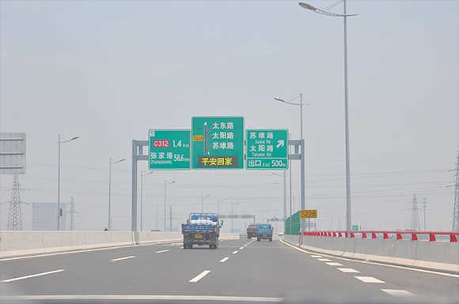

1、中环北线主线太平段至太阳路立交段全程限速100。太阳路立交至大同路立交段全程限速80.中环西线与312国道并线段限速70.泰山路至吴中大道段限速80。请按照限速行驶，注意安全驾驶。
2、中环西线段开通后带来方便的同时也带来了许多问题，主要有以下几个方面：
(1)违规超速：由于中环快速路路况较好，车流量较小，致使不少驾驶员进入中环快速路后没有按照规定的车速行驶，容易引发交通事故。
(2)违规掉头、逆行：目前中环快速路仅有部分上下匝道开通，部分市民没有提前做好出行的准备和规划，盲目选择中环快速路通行，致使不少车辆错过匝道口后，违规掉头、逆行，对后方车辆造成安全隐患。
(3)电动车、行人闯入：有不少电动车、行人为避开地面红绿信号灯，违规驶入中环快速路，极易与主线行驶的车辆发生事故。
(4)从政府有关部门获悉，考虑货车对高架道路的综合影响，中环快速路将全面实行禁止货运机动车驶入。
温馨提示
由于中环快速路上交通标志标牌还未安装齐全，这就需要驾驶人在出行前，提前设计好行驶路线，以免走错路。试通车期间很有可能会走错路，希望驾驶人尽快熟悉道路通行方式。另外，路面上中心隔离设施还不够稳固，车辆在隔离设施处调头现象较为频繁，请大家要提高警惕。